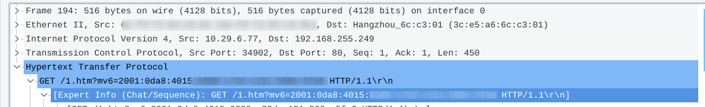

0x00. 简介:
- 这是针对我校(西安石油)路由器认证给出的解决方案(包括ipv6 认证)
- drcom程序禁止开启热点,为此有大佬逆向了drcom程序,分析出了认证数据包的关键字,并且模拟了认证数据包,程序核心是发送认证数据包维持心跳包,由于跳过了drcom程序,所以可以使得一直保持在线状态.
- 程序已经开源,有python版本,和C语言版本
本文主要记录C语言版本使用方法(python对于小容量nand flash闪存芯片就是灾难,根本放不下) - 2019.09.06 更新日志: 优化ipv6认证shell脚本
0x01. OpenWrt
简介:
OpenWrt项目是一个针对嵌入式设备的Linux操作系统。OpenWrt不是一个单一且不可更改的固件，而是提供了具有软件包管理功能的完全可写的文件系统。(划重点: Linux,可写文件系统)
0x01 .1如何使用OpenWrt
- 准备工作:
0.1 一个任意Linux发行版(如果你使用win,需要准备虚拟机)
0.2 网线,路由器 - 硬件基础
支持的设备 见链接 - 如何刷入高度危险
风险提示:误操作可能导致路由器变砖(无编程器可能导致报废)
某些设备支持直接刷入(eg:linksyswrt 系列
某些不支持直接刷入(eg: 小米路由青春版
相关信息可以查阅goole 你的设备型号 openwrt来判断
另外,推荐使用OpenWrt官方固件 注意,版本最好为Current Stable Release(或自己构建),毕竟你不知道他人固件里有没有私货,还有一点就是下文中的SDK和刷入版本需要一致,不然会遇到编译出来的安装包无法安装的问题!!!
OpenWrt官方固件刷入下载地址0x02. 构建drcom安装包
- (win: 打开虚拟机,选择nat网络模式,打开你的Linux发行版 查看发现版命令
lsb_release -a - 根据自己的Linux发行版安装必要的依赖
参考链接 - 下载OpenWrt SDK
使用ssh 连接路由cat /proc/cpuinfo查看路由信息
根据路由选择SDK (这里以常用的mtk7620芯片举例)
下载地址: https://downloads.openwrt.org/
下载openwrt-sdk-18.06.1-ramips-mt7620_gcc-7.3.0_musl.Linux-x86_64.tar.xz注意是有gcc的!
1 | $ wget https://downloads.openwrt.org/releases/18.06.2/targets/ramips/mt7620/openwrt-sdk-18.06.1-ramips-mt7620_gcc-7.3.0_musl.Linux-x86_64.tar.xz #mtk7620 SDK |
接下来拉取drcom源码
1 | $ git clone https://github.com/mchome/openwrt-dogcom.git package/openwrt-dogcom |
接下来编译路由安装包
1 | $ make package/openwrt-dogcom/compile |
如果没有问题,现在就已经构建好了
现在可以去当前目录下的bin文件夹下找到dogcom.ipk,luci-app-dogcom.ipk,之后cd进该目录/在此处打开终端
- 录屏教程
0x03 安装dogcom安装包,启动认证程序
上传并安装dogcom软件
1
2
3
4$scp dogcom*.ipk luci-app-dogcom*.ipk root@192.168.1.1:/rooot/
$ ssh root@192.168.1.1
root@OpenWrt:~# ls #查看文件是否上传成功
root@OpenWrt:~# opkg install dogcom*.ipk luci-app-dogcom*.ipk现在可以把网线插入路由器的
wan口了- 修改配置文件
1.登录路由器ssh root@192.168.1.1
2.修改配置文件vim /etc/dogcom.conf1
2
3
4
5
6
7
8
9
10
11
12
13
14
15server = '192.168.255.249'
username='***********' #校园网账号
password='***********' #校园网密码
CONTROLCHECKSTATUS = '\x20'
ADAPTERNUM = '\x05'
host_ip = '10.29.6.70' #主机地址
IPDOG = '\x01'
host_name = 'boom'
PRIMARY_DNS = '10.200.4.1'
dhcp_server = '10.29.6.254' #楼层路由地址
AUTH_VERSION = '\x0a\x00'
mac = 0xb025aa1 #mac地址，前面加0x
host_os = 'Windows'
KEEP_ALIVE_VERSION = '\xdc\x02'
ror_version = False
修改好了之后:wq保存退出
- 启动drcom程序
/etc/init.d/dogcom start && /etc/init.d/dogcom enable - 测试连通性
方法一: ping baidu.com
二: 打开 http://192.168.255.249/ 看是否在线
三:ps |grep dogcom#看是否有dogcom进程0x04 添加ipv6认证
概述:由于我校新加了ipv6认证,所以ipv6访问会出现一定问题.
经过观察,发现访问ipv6地址时浏览器会跳转到 http://192.168.255.249,所以抓了一次包,wireshark截图如下

所以ipv6认证方式显而易见,是通过一次GET请求来实现的,模拟这一过程就好!依赖软件
opkg update && opkg install curl
如果遇到超时,需要换下openwrt的源sed -i 's_downloads.openwrt.org_mirrors.tuna.tsinghua.edu.cn/openwrt_' /etc/opkg/distfeeds.confipv6-auth脚本
vim /etc/ipv6-auth.sh1
2
3
4
5
6
7
8
9
10
11
12
13
14
15
16
17
18
19
20
21#! /bin/sh
ip6=`ip address show | grep "2001" |awk '{print $2}' |cut -d '/' -f 1`
number=0
while [ -z "$ip6"]; do
sleep 3
ip6=`ip address show | grep "2001" |awk '{print $2}' |cut -d '/' -f 1`
((number ++));
if [ $number -gt 6 ]; then
break;
fi
done
if [ -z "$ip6" ]; then
echo "get ipv6 address fail" > /tmp/ipv6.log
logger -t IPV6 "get ipv6 address fail"
else
curl -s -o /dev/null http://192.168.255.249/1.htm?mv6=$ip6&url=http://npupt.com/ 2>&1
echo "ipv6 auth success" > /tmp/ipv6.log
logger -t IPv6 "IPv6 auth sucess."
fi
exit 0
开机认证/etc/rc.local
1 | sh /etc/ipv6-auth.sh |
另外ipv6认证维持时间据我观察好像是12小时
故还得写个定时任务/etc/crontabs/root
1 | 0 */3 * * * /etc/ipv6-auth.sh #每三小时发送一次认证请求 |
重启路由器
测试 ping ipv6.google.com
但是这个时候只是路由器ipv6连通了,下面的设备ipv6依旧不通,鉴于认证方式基于ipv6地址,故无法采用ipv6 relay,ipv6 passthrougth技术,可选的只有ipv6 nat
0x05 ipv6 NAT
这部分参考了清华大学的openwrt ipv6讨论
见地址推荐阅读
- 安装需求包
opkg install ip6tables kmod-ipt-nat6 kmod-ip6tables kmod-ip6tables-extra luci-proto-ipv6 iputils-traceroute6 开启默认通告
1
2uci set dhcp.lan.ra_default='1'
uci commit dhcp加入nat6的路由表
在/etc/firewall.user加上1
2
3
4
5WAN6=eth0
LAN=br-lan
ip6tables -t nat -A POSTROUTING -o $WAN6 -j MASQUERADE
ip6tables -A FORWARD -m conntrack --ctstate RELATED,ESTABLISHED -j ACCEPT
ip6tables -A FORWARD -i $LAN -j ACCEPT
WAN6和LAN分别改成外网IPv6和内网网卡(interface)的名字，注意不是防火墙区域(zone)的名字，也不是LuCI里面Network->Interfaces里面看到的名字，而是ifconfig看到的名字
- 默认网关设置
添加/etc/hotplug.d/iface/99-ipv61
2
3
4
5
6#!/bin/sh
[ "$ACTION" = ifup ] || exit 0
iface=wan6
[ -z "$iface" -o "$INTERFACE" = "$iface" ] || exit 0
ip -6 route add `ip -6 route show default|sed -e 's/from [^ ]* //'`
logger -t IPv6 "Add IPv6 default route."
记得加可执行权限chmod +x /etc/hotplug.d/iface/99-ipv6
- 重启,收工
如果没特殊情况,现在你的路由器可以下发ipv6地址了,并且ipv6可以连通了,但是针对某些网站(npupt.com)访问依旧会出现问题,这是由于ipv6 nat下发的是私有ipv6地址,经过转换之后出去的.所以浏览器默认你没有公网ipv6,导致couldflare防火墙认为你没有ipv6地址造成的.暂无解决办法(已解决,见下文) - 浏览器ipv6问题
经过朋友提醒,浏览器有一个特性,它不认fd开头
的ipv6地址,它认为你拿的是私有地址,所以浏览页面一直使用ipv4,也就造成npupt.com等只允许ipv6的网站上不去,所以把fd开头改成dd开头就好了!
#修改ipv6前缀 (修改ula_prefix那一行)
vim /etc/config/network
1 | config globals 'globals' |
0x06. 后记
个人文章,难免有错误,欢迎各位留言和指正!
当然如果你按照此文配置遇到了问题,欢迎留言,我会尽力帮助!233
完结了!!!